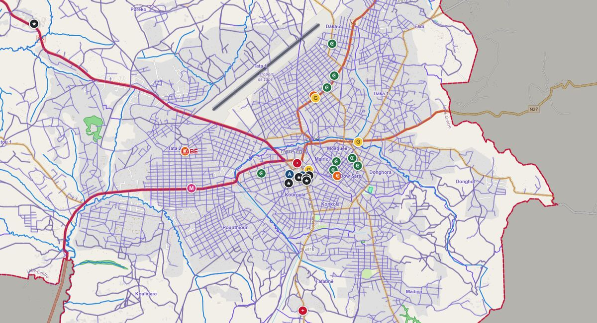

Grand public
Consulter librement la carte de la commune, sans compte : quartiers, rues, bâtiments, équipements, relief et zones inondables. Rechercher une adresse, calculer un itinéraire, sélectionner et analyser les données.
Accès libreSystème d'information géographique de la commune
La carte de la commune, ouverte à tous, et l'outil de travail des services municipaux : adresses, foncier, salubrité, environnement, réseaux, marchés et gares routières.

Consulter librement la carte de la commune, sans compte : quartiers, rues, bâtiments, équipements, relief et zones inondables. Rechercher une adresse, calculer un itinéraire, sélectionner et analyser les données.
Accès libreSaisir et suivre les données sur le terrain (même hors connexion), traiter les signalements et travailler dans les services communaux attribués à son compte.
Connexion requiseCréer les comptes des agents et choisir leurs services, valider les saisies avant publication, suivre le tableau de bord et le journal d'activité.
Connexion requiseLes comptes des agents sont créés par l'administrateur du WebSIG à la mairie : il n'y a pas d'inscription libre.
Noms des voies, numérotation métrique des bâtiments, plaques et certificats d'adresse.
Parcelles, titulaires, dossiers d'urbanisme, litiges et fiscalité foncière.
Dépôts sauvages, points de collecte, tournées et couverture du ramassage.
Zones protégées et inondables, atteintes, plantations, points d'eau et feux.
Éclairage public, bornes-fontaines et interventions de maintenance.
Sites, emplacements, loyers, tickets, quittances et impayés.
Le WebSIG est le système d'information géographique de la Commune urbaine de Labé. Il rassemble sur une même carte les données de référence de la commune et les informations mises à jour par les services municipaux. Les saisies des agents ne sont publiées sur la carte publique qu'après validation par la mairie.
Les données sont aussi diffusées aux formats standards (WMS / WFS), utilisables dans QGIS.
Pour une question, un signalement ou une demande de compte agent, adressez-vous à la mairie de Labé, auprès de l'administrateur du WebSIG.